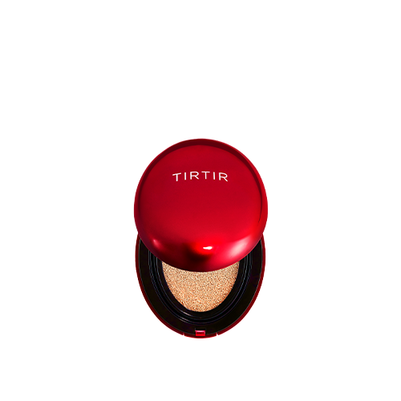
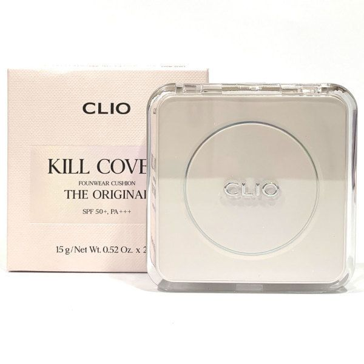
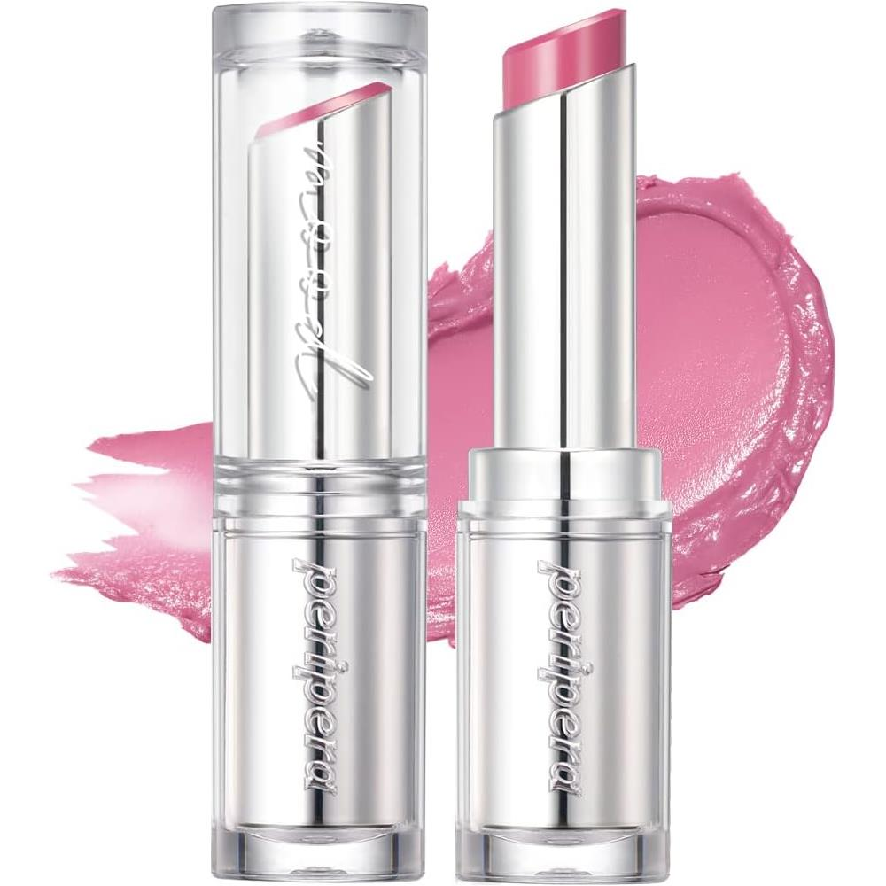
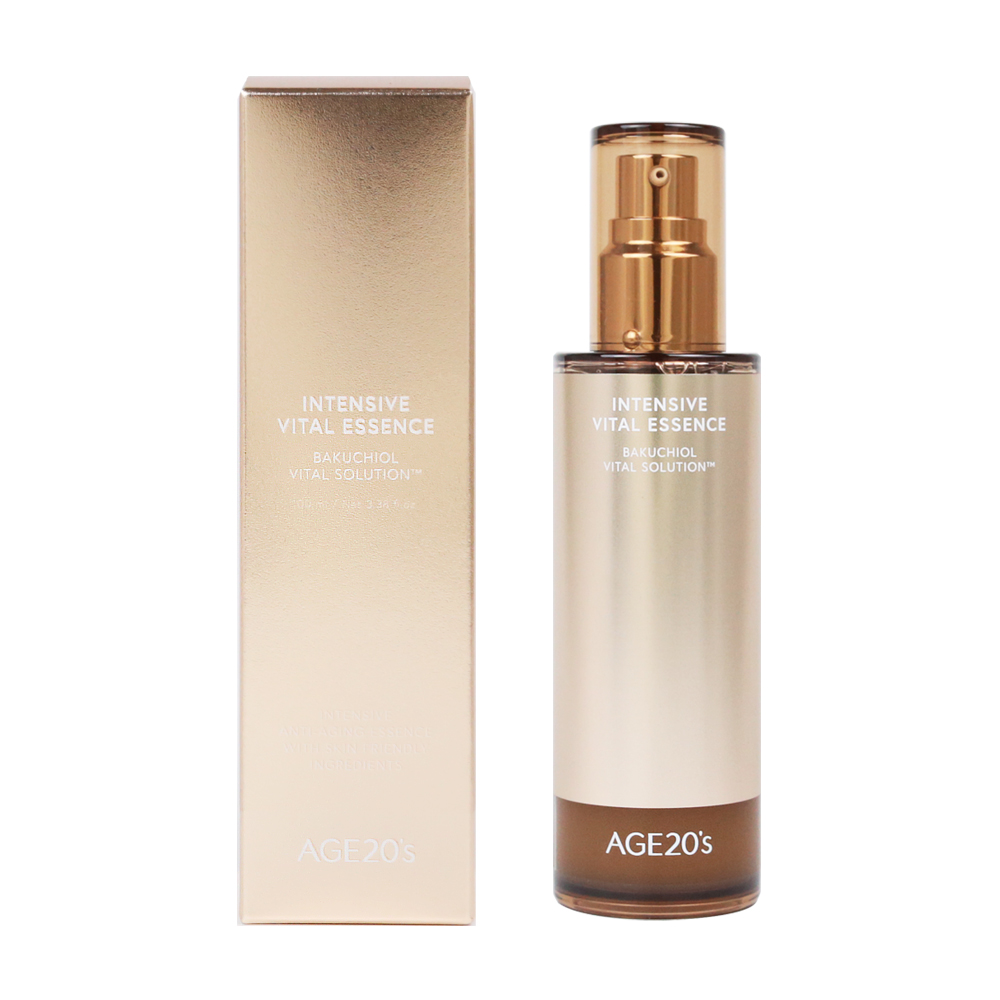
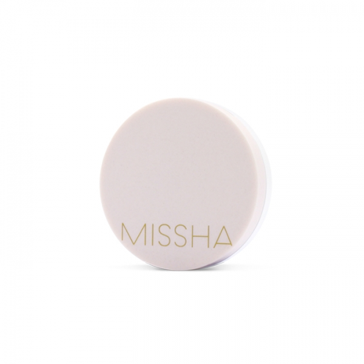
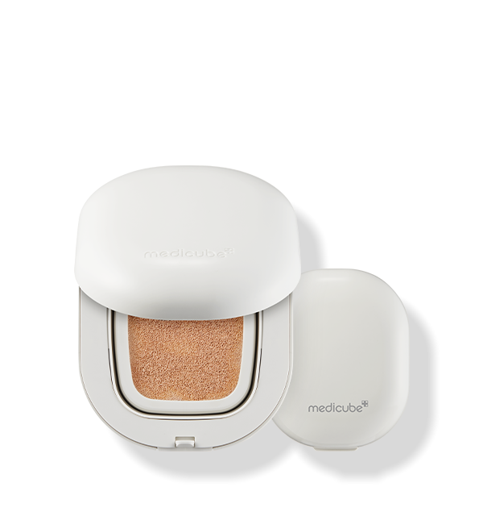

Home › Korean Cushion
6 Best Korean Cushions for Glass Skin (2026)
The Korean cushions worth the hype
I rounded up 6 Korean cushion worth knowing — the ones K-beauty fans keep coming back to. Real products, honest notes, and roughly what they cost. Prices are approximate; check the retailer for today's price.

Mask Fit Red Cushion
Full-coverage cushion with a huge shade range — viral for a reason.
A full-coverage, long-wearing cushion that went viral for its wide shade range. Buildable and camera-friendly with a natural finish.
≈ $27.0 (approx) · Ships worldwide
Check price on Amazon →
Kill Cover Founwear Cushion
Long-wearing cushion with a natural, sturdy finish.
A high-coverage, long-wearing cushion with a natural yet sturdy finish. A dependable pick for oily skin or all-day wear.
≈ $30.0 (approx) · Ships worldwide
Check price on Amazon →
Ink Lasting Cushion
Thin, natural cushion with long-lasting wear.
A thin, natural-coverage cushion with long-lasting wear from a cult K-beauty brand. Lightweight for everyday and buildable if you want a bit more.
≈ $14.0 (approx) · Ships worldwide
Check price on Amazon →
Essence Cover Pact
Dewy essence cushion loved for glassy skin.
An essence-rich cushion loved for a glassy, dewy finish. Lighter coverage that leans natural and radiant.
≈ $25.0 (approx) · Ships worldwide
Check price on Amazon →
Magic Cushion Cover Lasting
Budget-friendly cushion with solid coverage.
A budget-friendly cushion with surprisingly solid, lasting coverage. A popular entry point into K-beauty cushions.
≈ $15.0 (approx) · Ships worldwide
Check price on Amazon →
Red Cushion Foundation
Skincare-first cushion for a natural glow.
A skincare-leaning cushion aimed at a natural, glowy finish. Comfortable for drier skin that wants light-to-medium coverage.
≈ $30.0 (approx) · Ships worldwide
Check price on Amazon →Save this for your next K-beauty haul
Prices are approximate and pulled from public shopping data; always check the retailer for the current price and shade/size before buying.